City Model
2026Turns any area of the map into a multicolor 3D printable model, with terrain, buildings, roads, and water from Overture Maps and LiDAR surveys.
TypeScript, React, Three.js, MapLibre
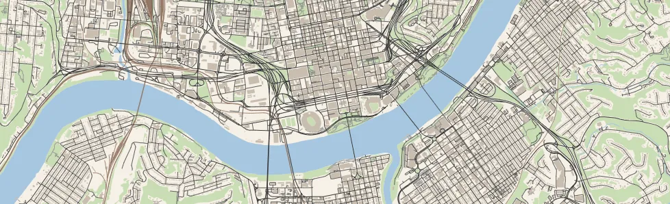
Drag or use the arrow keys to move the map. Double-click, use the plus and minus keys, or hold Ctrl and scroll to zoom. Until the map is moved, it shows a tour of other cities and styles, which the Pause tour button stops.
Drawn by map.js in styles from Styles from SVGmap and City Model. Map data © OpenStreetMap
I'm a software developer in Cincinnati. At London Computer Systems I work on Net Dial Tone, a VoIP phone platform, across the Angular front end, the Node.js and C# .NET services, and the Asterisk call flows underneath them.
Before that I built ERP and CRM integrations at Martin & Associates during my co-op years at the University of Cincinnati, where I earned a B.S. in Computer Science in 2023.
Outside of work I run City Model, a web app with free and paid tiers that turns any area of the map into a multicolor 3D printable model. It grew out of the miniature maps I design as Jarvizar. I also make SVGmap, for laser engraving and pen plotters. Both apps build their maps in the browser from OpenStreetMap, Overture Maps, and elevation data, and City Model also reads LiDAR from USGS, NOAA, and other public surveys.
Other projects include Three.js games such as Citydriver 2 and Coastline.
London Computer Systems, Mason, OH
Jarvizar, Cincinnati, OH
University of Cincinnati, Carl H. Lindner College of Business
Martin & Associates, Cincinnati, OH
Phototype, Cincinnati, OH
| Languages | TypeScript, JavaScript, C#, Python, SQL, C, GLSL, HTML/CSS |
|---|---|
| Front End | Angular, React, Three.js, WebXR, D3.js, elkjs, Web Workers, Vite, Electron |
| Mapping & GIS | MapLibre GL, Leaflet, QGIS, OpenStreetMap, Overture Maps, GeoParquet, vector tiles, GeoJSON, LiDAR (LAZ, COPC, EPT), proj4js, pyproj, shapely |
| Back End | Node.js, .NET, REST APIs, WebSockets, Express, Flask, MySQL, SQLite |
| Telephony | Asterisk ARI/AMI, OpenSIPS, call routing, dialplans |
| Infrastructure | Docker, Kubernetes, Rancher, Helm, CI/CD, Cloudflare Workers, D1 |
| Testing | Integration and unit tests, Vitest, Playwright, QA, accessibility (A11Y Project checklist, WCAG) |
| 3D & Design | Blender (Python add-ons), SolidWorks, Inkscape |
| Fabrication | 3D printing, laser engraving, pen plotting |
Turns any area of the map into a multicolor 3D printable model, with terrain, buildings, roads, and water from Overture Maps and LiDAR surveys.
TypeScript, React, Three.js, MapLibre
Taxi game in a procedurally generated island city, with traffic, pedestrians, weather, and a fare system.
JavaScript, Three.js, WebXR, Electron
Endless procedurally generated maze with six levels, a found footage mode, and an editor for walls, lights, and furniture.
JavaScript, Three.js, GLSL, WebXR
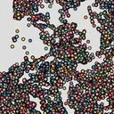
Visual Interfaces for Data (CS 5124) Three D3.js dashboards: exoplanets, Cincinnati 311 calls, and The Simpsons transcripts.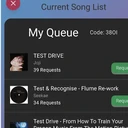
PartyLine Shared song queue for parties, with a Flask API, Socket.IO, and Spotify search.I design 3D printable miniature maps and publish them as Jarvizar. They have more than 31,000 followers and 180,000 downloads on MakerWorld, Printables, and Thingiverse.
Modeling each map by hand takes a long time, so I automated it:
Prints made with City Model and SVGmap, and the Jarvizar models designed by hand before them. Select a photo to enlarge it.
Prints made with City Model, including cities and stadiums built from LiDAR.
Prints, pen plots, and laser engravings made with SVGmap.
Maps modeled by hand since 2023 and published on MakerWorld, Printables, and Thingiverse.
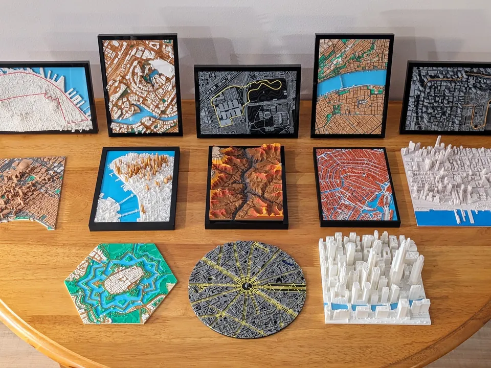
All prints togetherCity Model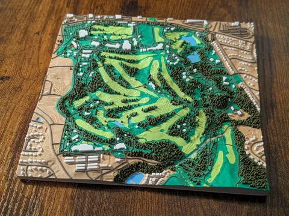
Augusta NationalCity Model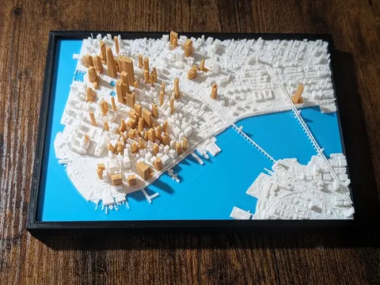
Lower ManhattanCity Model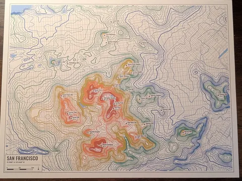
San FranciscoSVGmap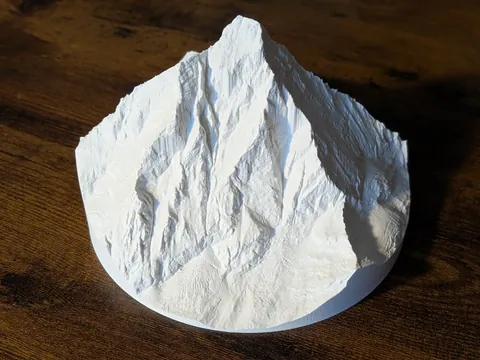
MatterhornCity Model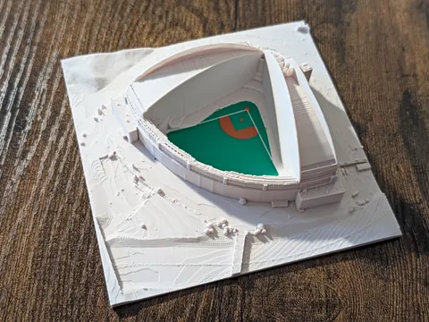
American Family FieldCity Model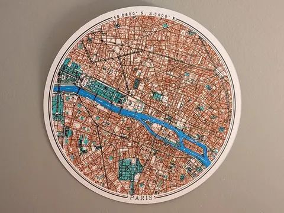
ParisSVGmap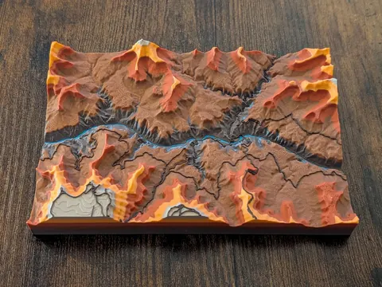
Grand CanyonCity Model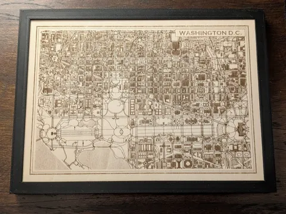
Washington, D.C.SVGmap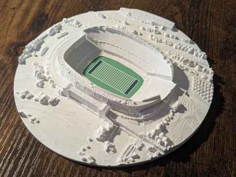
Soldier FieldCity Model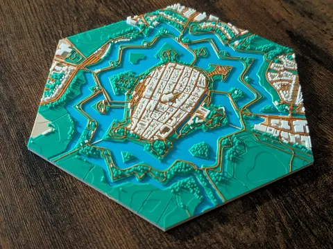
NaardenCity Model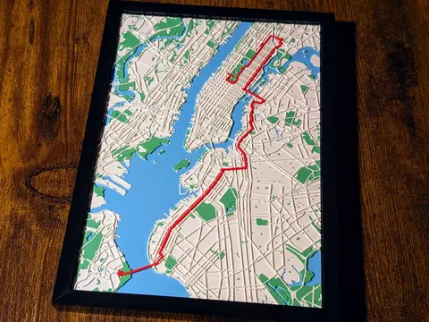
NYC MarathonCity Model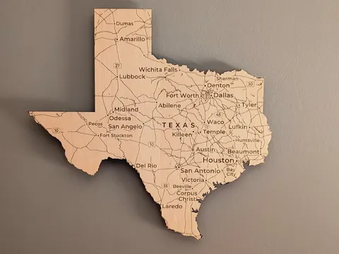
TexasSVGmap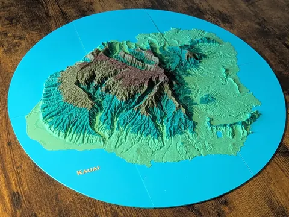
KauaiCity Model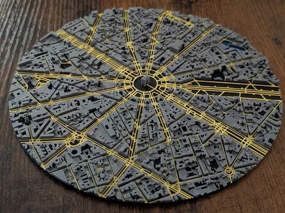
Arc de TriompheCity Model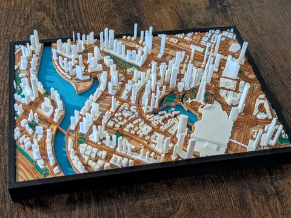
DubaiCity Model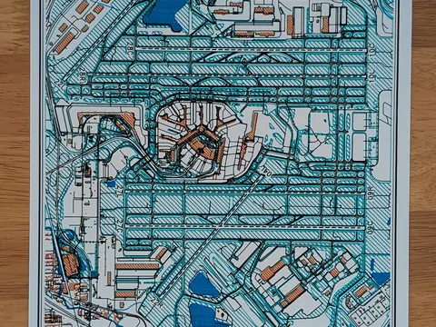
O'HareSVGmap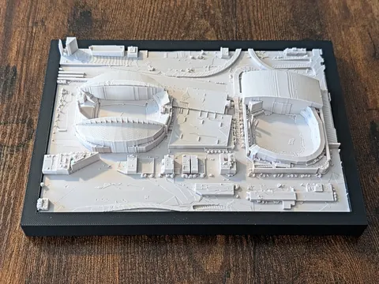
Lumen Field, SeattleCity Model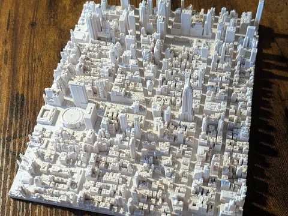
Midtown, from LiDARCity Model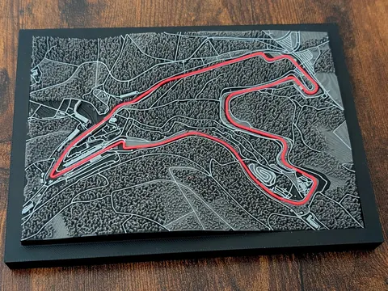
Spa-FrancorchampsCity Model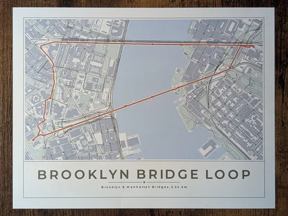
Brooklyn Bridge LoopSVGmap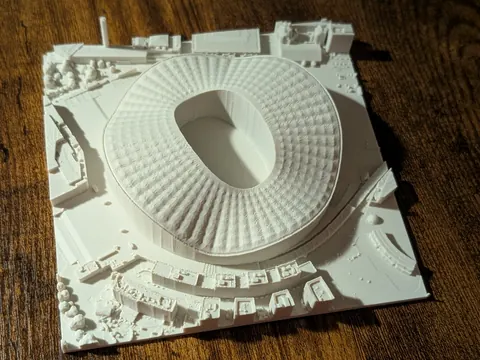
Stade VélodromeCity Model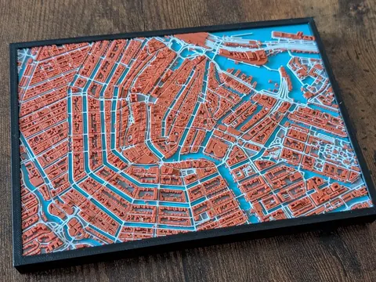
AmsterdamCity Model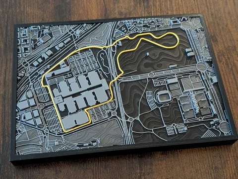
Madring, MadridCity Model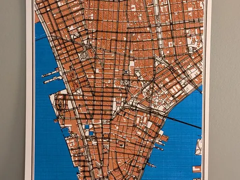
Lower ManhattanSVGmap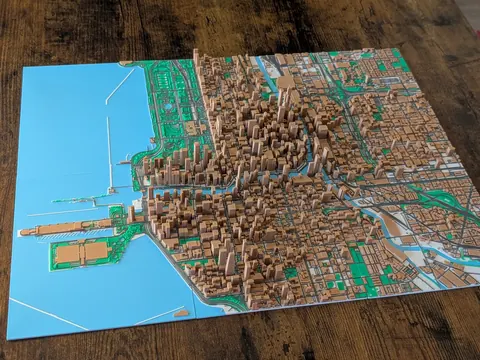
Chicago, 6 platesCity Model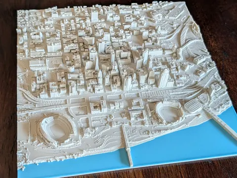
CincinnatiCity Model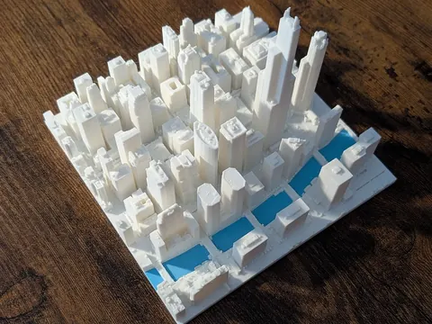
Chicago, LiDAR onlyCity Model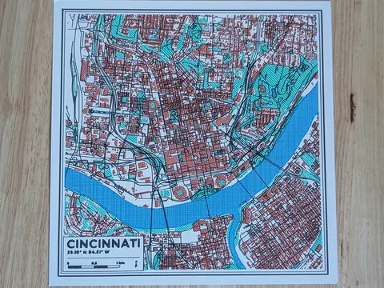
CincinnatiSVGmap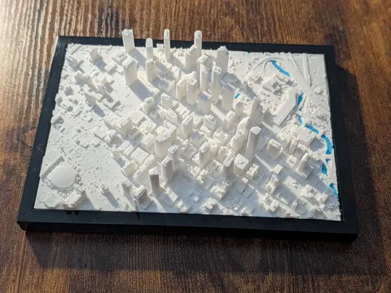
Houston, LiDAR onlyCity Model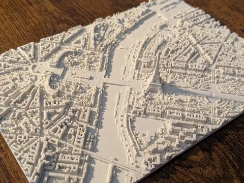
Paris, LiDAR onlyCity Model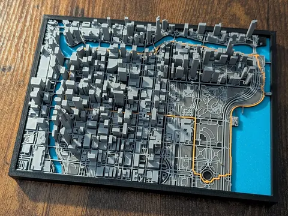
Chicago, with a routeCity Model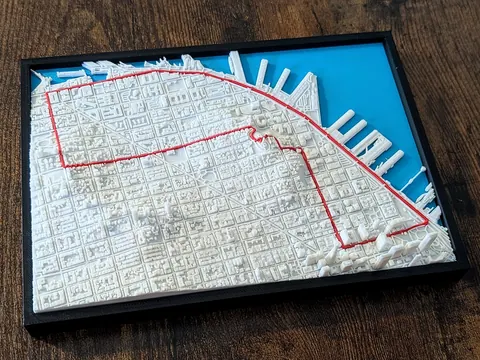
Lombard Street runCity Model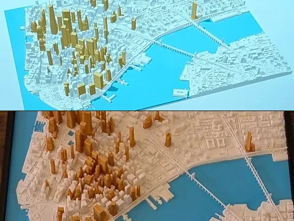
On screen and printedCity Model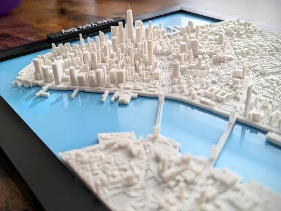
New York CityJarvizar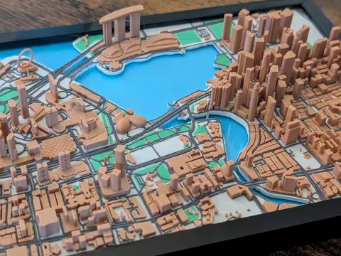
Singapore, multicolorJarvizar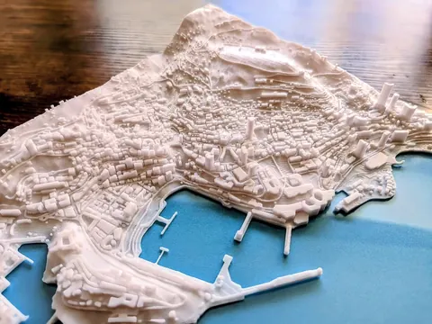
MonacoJarvizar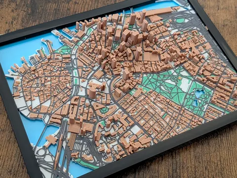
Boston, multicolorJarvizar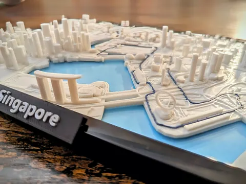
SingaporeJarvizar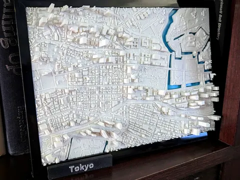
TokyoJarvizar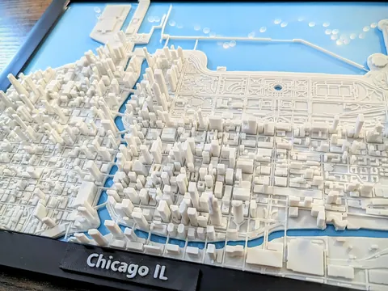
ChicagoJarvizar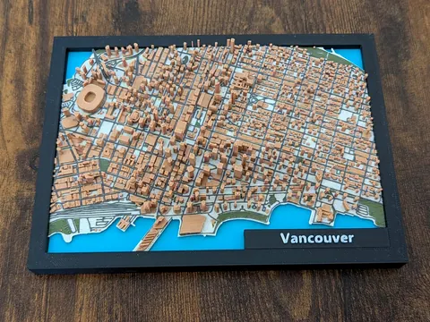
Vancouver, multicolorJarvizarBachelor of Science, Computer Science. College of Engineering and Applied Science.
Cincinnati, OH